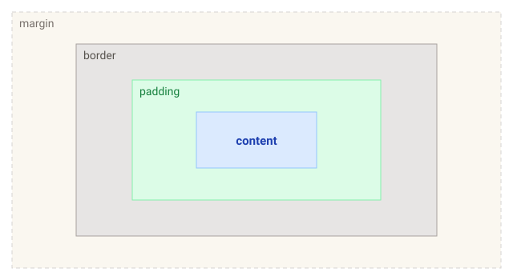

1. Блокова модель
Кожен елемент — це прямокутний «ящик», що складається з чотирьох шарів (від центру назовні):
- content — сам вміст (текст, зображення);
- padding — внутрішній відступ між вмістом і межею;
- border — рамка;
- margin — зовнішній відступ до сусідів.

.box {
width: 300px;
padding: 20px;
border: 2px solid #333;
margin: 16px;
}2. box-sizing
За замовчуванням width задає лише ширину content, а padding і border
додаються зверху — реальний розмір більший. Властивість
box-sizing: border-box робить так, що width включає padding і
border. Це майже завжди зручніше.
* {
box-sizing: border-box;
}
/* тепер width: 300px — це РЕАЛЬНА ширина ящика */
box-sizing: border-box для всіх елементів — стандартний перший рядок
майже кожного проєкту. Без нього розрахунок розмірів стає болісним.
3. Скорочений запис відступів
margin: 10px; /* усі сторони */
margin: 10px 20px; /* верх/низ | ліво/право */
margin: 5px 10px 15px 20px;/* верх | право | низ | ліво */
padding: 1rem 2rem;
margin: 0 auto; /* горизонтальне центрування блока */4. Схлопування відступів
Вертикальні margin сусідніх елементів «схлопуються» — береться більший, а не
їх сума. Це часта причина несподіваних відступів.
5. display: block, inline, inline-block
-
block— займає всю ширину, починається з нового рядка (div,p); -
inline— у рядку, ігнорує ширину/висоту (span,a); inline-block— у рядку, але приймає розміри й відступи;none— прибирає елемент з потоку.